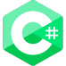
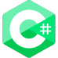
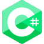

Tecnologías que domino


 

Me apasiona el desarrollo web y trabajar en proyectos que me permitan aplicar
mis conocimientos en diferentes tecnologías para crear soluciones efectivas y
escalables.
Considero que mi formación como Ingeniera es una ventaja en mi
perfil como Full Stack Developer, ya que me permite tener una comprensión más
profunda de los sistemas y procesos que están detrás de las aplicaciones y
sitios web que desarrollamos.
Me considero una persona proactiva, enfocada en el trabajo en equipo y en la
mejora continua de mis habilidades técnicas y personales.
Además de mi perfil profesional, me gusta dedicar mi tiempo libre
a diferentes actividades que me permiten desarrollar mi creatividad
y habilidades artísticas. Por ejemplo, disfruto de la música y toco
varios instrumentos, como el piano, el acordeón y la guitarra.
También me gusta dibujar, tanto en papel como digitalmente, y he
participado en algunos proyectos personales para poner en práctica
mis habilidades.
En cuanto a mi formación, he complementado mis estudios de Ingeniería
con diversos cursos, como Photoshop, Unity y Big Data, lo que me permite
tener una perspectiva más amplia y versátil en mi trabajo como
desarrolladora full stack.
Además de la tecnología, también me apasiona la naturaleza y el senderismo.
Vivo en León, España, una ciudad rodeada de montañas y paisajes naturales
impresionantes, lo que me ha permitido combinar mi amor por la tecnología
con mi interés por el aire libre.
Grado en Ingeniería de Sistemas Audiovisuales y Multimedia
Estudio de los fundamentos de las Tecnologías de la Información y las Comunicaciones, para
especializarse después en:
üî∏ La informaci√≥n audiovisual y multimedia estudiando de manera rigurosa y sistemática su
generación, (equipos de audio y vídeo, diseño de estudios de grabación, formatos de codificación –
mp3, jpeg, …–)
üî∏ La transmisi√≥n (redes de comunicaciones, difusi√≥n de televisi√≥n y radio digital, servicios de internet
para información multimedia)
üî∏ El almacenamiento (tecnolog√≠a de cd‚Äôs y dvd‚Äôs, servidores de almacenamiento, ‚Ķ)
üî∏ La integraci√≥n con el resto de tecnolog√≠as de la telecomunicaci√≥n.
Bootcamp en Desarrollo Web y Móvil
Formación como Full Stack Developer utilizando las últimas tecnologías más demandadas del mercado
actual:
üîπHTML5, CSS3, JavaScript, BootStrap y Material de Google para conseguir los mejores resultados visuales
y de usabilidad «UX/UI».
üîπNode.js, Express.js, MySQL y MongoDB para el desarrollo de API REST capaces de gestionar datos y
ofrecer servicio a una aplicación web.
üîπFrameworks Angular e Ionic.
üîπDespliegue de servicios en la nube con Amazon Web Services (AWS).
üîπConocimientos en metodolog√≠as Agile y Scrum.

He realizado una práctica de maquetación en la que he replicado la web de la academia Codenotch utilizando vanilla.js. El objetivo de este ejercicio era mejorar mis habilidades en maquetación y lograr que mi versión de la web se pareciera lo más posible a la original de Codenotch.
Desarrollé una landing page para una agencia de viajes, utilizando HTML, CSS y JavaScript para crear un formulario que guarda registros de consulta en formato JSON y un botón de filtrado que muestra solo registros con destinos específicos. Este ejercicio me permitió mejorar mis habilidades en la integración de tecnologías web y el diseño de páginas web efectivas y atractivas.
¿Cómo evaluar la calidad de un sonido? Mi Trabajo de Fin de Grado tiene la respuesta. Desarrollé una herramienta que utiliza la norma ISO 1996-2 anexo K, conocida como Método de Inspección o Método de Peritaje, para evaluar la tonalidad de una señal sonora. Esta herramienta forma parte de MOSQITO, un proyecto FLOSS que proporciona un marco modular de métricas psicoacústicas clave para evaluar la calidad del sonido. ¡Descubre cómo la tecnología puede mejorar la percepción del sonido!